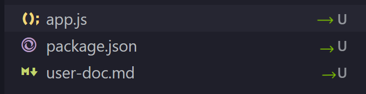
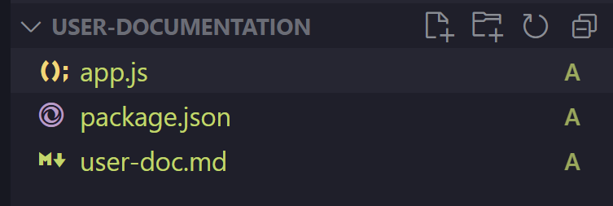
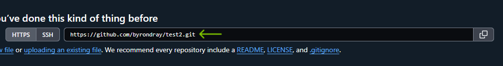
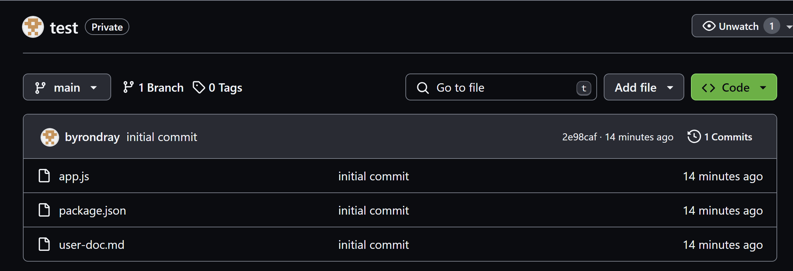
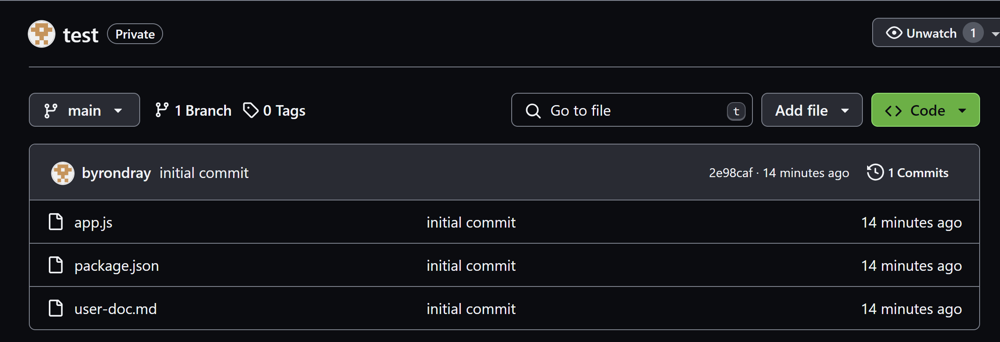

How to Initialize a Repository on GitHub
This section will focus on helping you initialize your GitHub repository. After you read this section, you will be able to setup a new GitHub repository for future projects.
Quick Usage
For those experienced in setting up repositories:
echo "# example" >> README.md
git init
git add README.md
git commit -m "first commit"
git branch -M main
git remote add origin https://github.com/<username>/example.
git push -u origin main
Setps to get started
In the introduction, you created a GitHub account and now you will be using that account to initialize your GitHub repository. You will be using a shell that was mentioned in the introduction.
Create a New Repository
-
Click the
+icon in the upper-right corner and select New repository. -
Or, go to https://github.com/new.
Configure Your Repository
Fill out the details of your repository:
- Repository name: Choose a unique name that reflects your project.
- Visibility: Select whether the repository is Public or Private.
Create the Repository
Click the Create repository button.
Navigate to the Source Directory (or create one)
-
Open Git Bash (or another shell, such as
zsh,sh,fish, so on) and runcd <path name>to navigate to the source directory of your project.- Example:
cd c:/users/user/bcit/comp1310/<directory name>
- Example:
-
If you do not have a source directory for your project, you can create one by running:
mkdir <folder name>- Make sure to
cdinto the directory after you create it
Push Your Project to GitHub
If you have a local repository to push:
Initialize Repository
Warning
Make sure you are in the source directory of your project before running the next command. Failing to do so could hinder your conputers performance. If you made this mistake find a solution in the troubleshooting section.
Success
You will know this command ran succesfully if you look at the Explorer in VScode and see a U beside the files. This means the files were added but they are Untracked by GitHub.

Stage New Files
# Add the files in your new local repository
# The "." allows you to upload all files in your current working directory.
git add .
Success
You will know this command ran succesfully if you look at the Explorer in VScode and see a A beside the files. This means the files were Added to the staging area.

Commit the files that you've staged in your local repository
Success
The feedback in the command line will indicate whether the command worked or not. This is what a succesful output looks like.
Warning
if you see the following output:
*** Please tell me who you are.
Run
git config --global user.email "you@example.com"
git config --global user.name "Your Name"
to set your account's default identity.
Omit --global to set the identity only in this repository.
Add Remote Origin
Remote Url
You Remote Url is located in your GitHub repository. Copy and paste it into the command below.

Warning
If you accidentally added the wrong remote URL, check out the troubleshooting section.
Push Changes to GitHub
Master or Main
If the command below does not work for you, replace master with main and try again.
Success
 Congrats! Your project is now in GitHub.

Congrats! Your project is now in GitHub.

Conclusion
In this section, you have learned how to:
- Create a new GitHub repository
- Navigate to the directory on you computer
- Initialize your project with GitHub
- Add, commit and push your project to the GitHub repository
Nice work! You can now move onto the next section, How to use your repository.